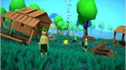

The main action you should do to survive and escape 70% of the time would be to stop staying around an area for too long. 2 mins each area max and 5 mins for villages.
hfcfdjhdsfjhdsheiubshujhsfddsjhdsjksdsdkdskdskdksdksdsdkjskdsjhdkkjdskjdskjdsdskjkdsdsdsjdsjhsdjksdjsdjhsjhsjjksdssdjksdkjdskjsdkjsdkjdskjsdkjsdksdkjsdkjdscx nhnbbsdb Your likely reading this because you want to have an actual chance to survive at least more than 2 days. This Tutorial will tell you how to survive and maybe even finish the game dnhgtdnhdtbf
hfcfdjhdsfjhdsheiubshujhsfddsjhdsjksdsdkdskdskdksdksdsdkjskdsjhdkkjdskjdskjdsdskjkdsdsdsjdsjhsdjksdjsdjhsjhsjjksdssdjksdkjdskjsdkjsdkjdskjsdkjsdksdkjsdkjdscx nhnbbsdb Your likely reading this because you want to have an actual chance to survive at least more than 2 days. This Tutorial will tell you how to survive and maybe even finish the game dnhgtdnhdtbf
This is a village find them and trade with them don’t attack the villagers or open the chief’s chest(green chest on a small pillar), unless you are done trading.(the more expensive the better)